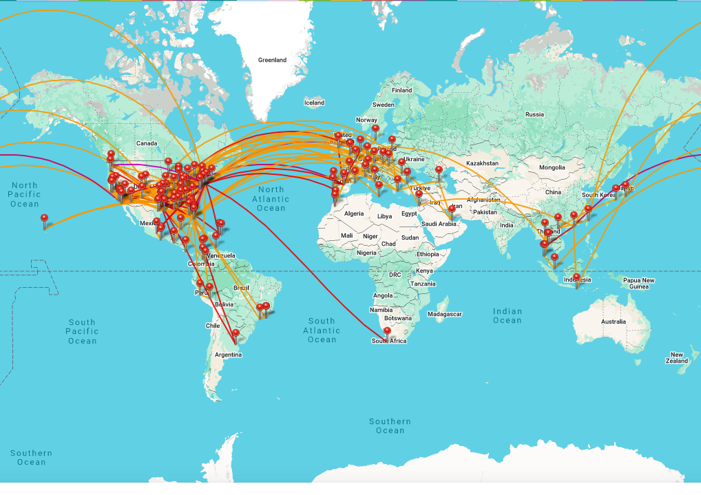

Hi! I'm Richie Rivera, holding a Bachelor of Science in Aerospace Engineering and Applied Mathematics from Embry-Riddle Aeronautical University and a Master of Science in Data Science from CUNY. I’m passionate about using data to solve problems and improve lives.
Growing up fascinated by aviation and driven to help others, I became the first in my immigrant family to pursue higher education. This path led me to continuously develop my skills in both engineering and data science.
I started my career with an internship at Southwest Airlines in Maintenance Programs, where I learned the value of bringing fresh perspectives and new skill sets to the table.
Now, I'm expanding my technical expertise and business knowledge. Collaboration and understanding are key to my success, helping create environments where everyone can contribute their unique strengths.
I play a key role in building our Marketing Analytics Ecosystem by configuring infrastructure and developing processes that support Data Science and Business Intelligence teams. Some of my key contributions include:
Completed a comprehensive set of data engineering, analytics, and operational machine learning projects that mirror the work of an ML engineer in production.
This work highlights machine learning engineering strengths in data preparation, feature engineering, model comparison, operational evaluation, and building reusable pipelines for analytics and production-ready ML solutions.
Focused on aeronautical systems, structural analysis, and mathematical modeling. Completed senior design work on engineering systems and aviation operations.
Since I was a child I loved to hop on a bike and go. In a city like New York, there's no shortage of places to visit and I've been cycling more and more every day! I've even joined a fun cycle group!
I also love to cook. My friends and I have a rotating cookbook club where we will select a cookbook and each bring at least 1 (typically 2) recipes from that book each!
You can probably tell from my projects, but I also do have a passion for aviation and travelling. With my first job (and my internship at Southwest Airlines), I had the privilege to take over 384 flights using the flight privileges! I hope to soon make it to mainland China and to Central Asia!
